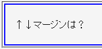

（body要素より下位の）親要素を持つp要素の上下マージンが無視される。
<div style="border:2px solid blue;"> <p style="margin:1.5em 0;">↑↓マージンは？</p> </div>
↑↓マージンは？
実線ボーダーとテキストの間にマージンを置いています。
Moz1.0.2での表示（標準モード））
WinIE6.0では標準・互換モードともに不具合の発生が確認されませんでした（WinIE5.5以上では発生しないそうです）。